Ventas rápidas con lector
Escanea el código y listo. Escribe 3*código para tres piezas, pesa a granel, busca por nombre con F6 y cobra con F12.
Cobra rápido con lector de códigos, lleva tu inventario, haz tu corte y entiende en qué días vendes más. Sin mensualidades, sin internet y en la computadora que ya tienes.
Para abarrotes, verdulerías, misceláneas, papelerías y cualquier negocio de mostrador. Funciona en PCs viejas.
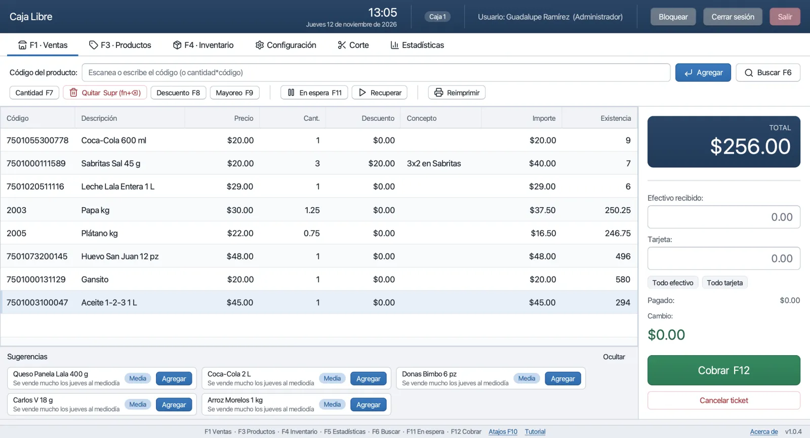
Quien ha abierto una tienda sabe lo que es: juntar para la renta, el primer surtido, el refrigerador… y cuando por fin buscas un sistema para cobrar, te encuentras con mensualidades, licencias y equipos especiales que, al empezar, simplemente no se pueden pagar. Entonces se cobra con libreta y calculadora, y así se queda por años.
Pero el dinero no es lo único que se va. También se va la tranquilidad. ¿Cuánto le toca hoy al de los refrescos y cuánto al del pan? ¿Me alcanza para pagarle a todos los repartidores esta semana? ¿Qué día puedo abrir un poco más tarde, cerrar temprano o tomarme un domingo sin que me pese? Casi nadie lo sabe con certeza, porque nadie tiene tiempo de sentarse a sacar cuentas al final de un día de doce horas.
De esa incertidumbre nació la parte de estadísticas y análisis de ventas de este programa. La idea es sencilla: que la misma caja que usas para cobrar te vaya diciendo, con tus propios números, cuánto estás ganando, qué días se vende más, qué horas son fuertes, qué te conviene pedirle a cada proveedor y qué productos solo ocupan espacio. Para que el tendero tenga una imagen más clara de su negocio y pueda decidir con calma en qué días relajarse y en cuáles ponerse las pilas.
“No es un sistema para grandes cadenas. Es para la tienda de la esquina, hecho por alguien que entiende lo que cuesta sostenerla.”
Cada función está pensada para usarse con el teclado y sin soltar al cliente. Todo lo que ves aquí ya existe en el programa.
Escanea el código y listo. Escribe 3*código para tres piezas, pesa a granel, busca por nombre con F6 y cobra con F12.
Efectivo, tarjeta, transferencia o vales, o una mezcla. Billetes rápidos (F1–F5) y el cambio en grande para que no haya errores.
¿El cliente olvidó algo? Pon el ticket en espera con F11, atiende al siguiente y recupéralo después. Varios a la vez por caja.
2×1, 3×2, descuento por departamento, por horario o hasta agotar existencias. Precio de mayoreo con un botón y descuentos manuales con permiso.
Entradas, ajustes y cada movimiento queda registrado. Avisos de producto bajo y filas en rojo cuando algo se agota.
Registra a tus repartidores y sus días de visita. El programa sugiere qué pedirle a cada uno y arma la orden de compra en borrador.
Fondo del día, ventas por forma de pago, por departamento, canceladas y ganancia. Corte parcial o general, con registro de quién lo hizo.
Días y horas pico, ticket promedio, comparativos contra la semana y el mes pasados, productos que más dejan y productos rezagados.
Con internet, consulta el pronóstico de tu ciudad y cruza el clima con tus ventas: más agua y hielo cuando hace calor, más sopas cuando llueve.
Ponle foto a lo que vendes sin código de barras (pan, fruta, dulces sueltos) para encontrarlo de un vistazo.
Administrador, gerente y cajeros con permisos por persona. Autorización con clave para cancelar o descontar. Todo queda en la bitácora.
Una caja con base de datos local, o varias cajas conectadas a un servidor PostgreSQL en la red de la tienda, con existencias compartidas.
Conéctate al Wi-Fi de la tienda y revisa ventas, estadísticas e inventario desde tu celular. Sin apps que instalar, sin nube.
Factura por venta o factura global a través de Facturama. Requiere una cuenta con ese servicio (tiene costo con ellos, no con nosotros).
Impresoras térmicas de tickets (ESC/POS) o de sistema, apertura del cajón de dinero y báscula por puerto serial.
Todo vive en tu computadora. La red solo se usa, si quieres, para actualizaciones, el clima y facturar.
Cuando hay versión nueva aparece un aviso discreto. Descargas el instalador, lo ejecutas encima y tus datos se quedan donde están.
Probado para equipos con 2–4 GB de RAM, disco duro mecánico y pantalla de 1024×768. También Mac y Linux.
Copia de seguridad al cerrar, restauración desde Configuración y exportación a CSV, Excel y PDF de cualquier tabla.
Cuentas por cliente y control del fiado. Todavía no está disponible; está en la lista de lo que sigue.
Capturar la entrada de mercancía fotografiando la nota del repartidor. Hoy es solo una demostración en la página móvil.
Capturas tomadas del programa con una tienda de ejemplo («Abarrotes Doña Lupita»). Sin retoques.
Rápida. Clara. Con el teclado.
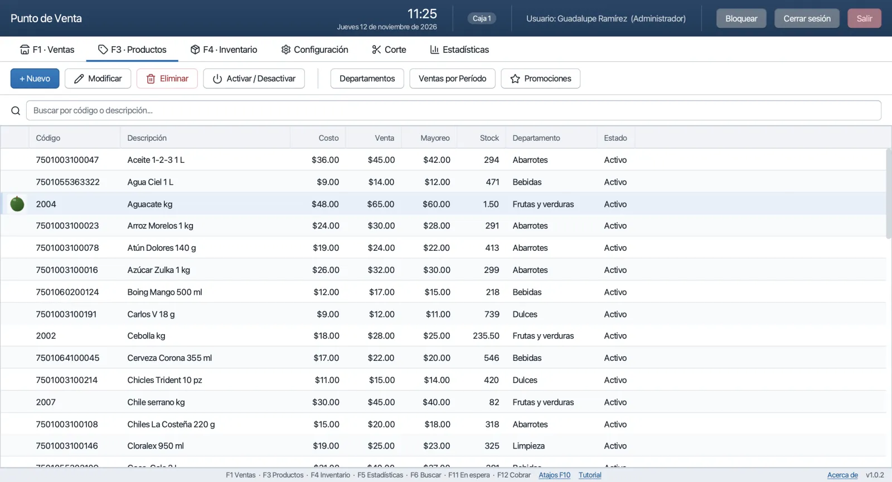
Tu catálogo con costo, venta, mayoreo, existencia y foto.
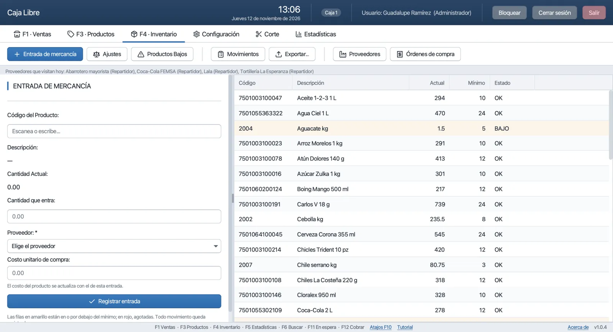
Entradas por proveedor, ajustes con motivo y alertas de producto bajo.
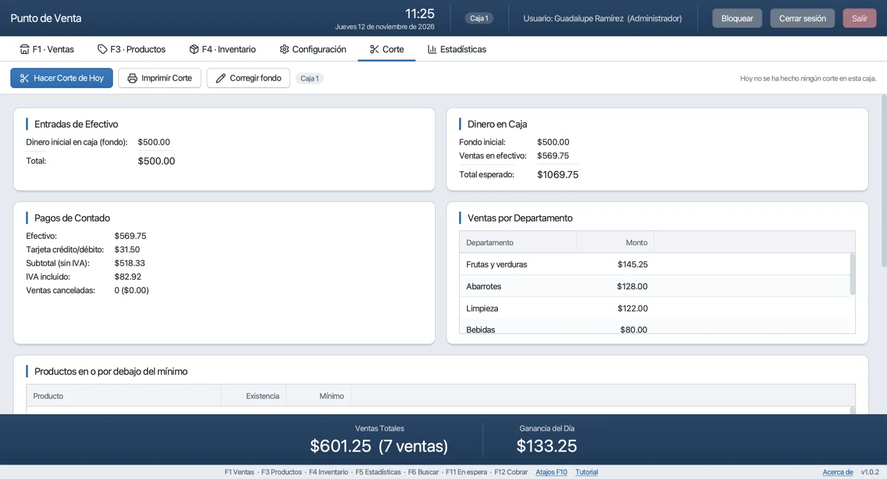
Lo que debe haber en el cajón, por forma de pago y por departamento.
Tus números, comparados con la semana y el mes pasados.
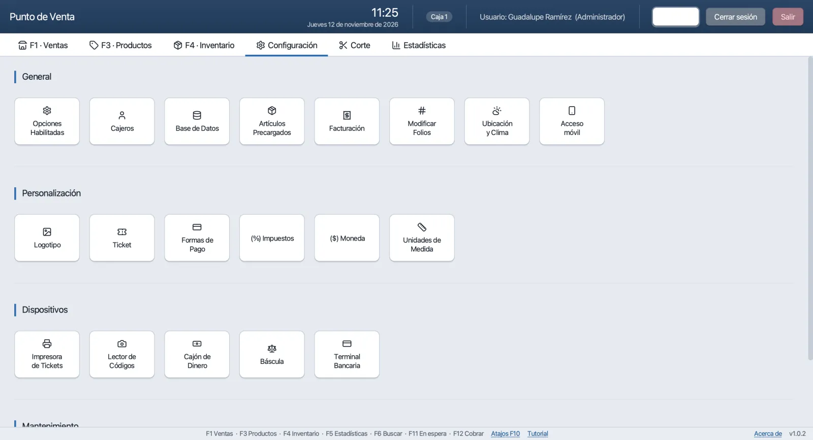
Negocio, ticket, logotipo, impresora, báscula, respaldos, usuarios, acceso móvil y facturación.
La pantalla donde pasarás el día. El cursor siempre está en el campo de código; cada producto que escaneas aparece en el ticket con su existencia, y la caja del total es imposible de perder de vista.
| Producto | Cant. | Importe |
|---|
Escribe lo que recibes o toca el billete con F1–F5. El cambio aparece en grande y en verde. Si el cliente paga parte con tarjeta y parte en efectivo, los dos campos lo resuelven.
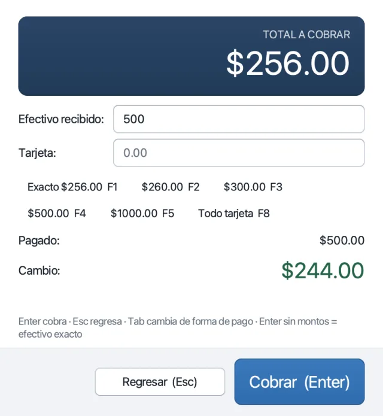
Da de alta un producto escaneando su código. Precio de costo, de venta y de mayoreo, departamento, unidad (pieza o kilo), mínimo de alerta y foto. En Inventario registras entradas por proveedor y cada ajuste queda con motivo y responsable.
Venta total, tickets, ticket promedio y comparativos contra la semana y el mes pasados. Gráficas por día, por día de la semana y por franja horaria. Y la parte que más ayuda a planear:
Secciones de Resumen, Horarios pico, Cajeros y horas, Productos más vendidos, Reabastecimiento, Recomendaciones y Clima. Cada sección tiene su botón de ayuda que explica, en palabras sencillas, cómo leer lo que muestra.
Dinero inicial, ventas en efectivo, tarjeta, transferencia y vales, lo que debe haber en el cajón, canceladas, ganancia (solo para quien tiene permiso de verla) y productos que se quedaron bajos. Corte por caja o general.
El programa abre una página en la red Wi-Fi de la tienda. Escaneas un código QR desde Configuración, entras con tu mismo usuario y ves ventas de hoy, estadísticas, historial e inventario desde el celular, en la trastienda o desde la casa si está en la misma red.
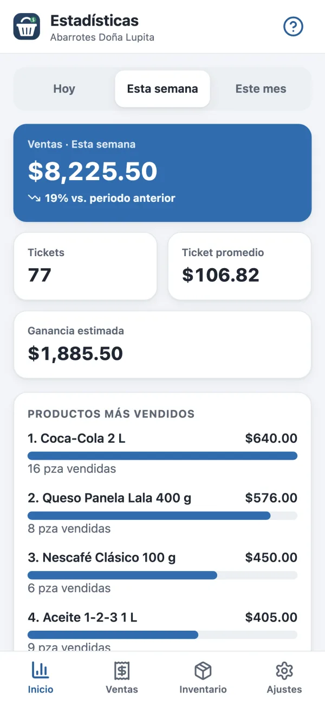
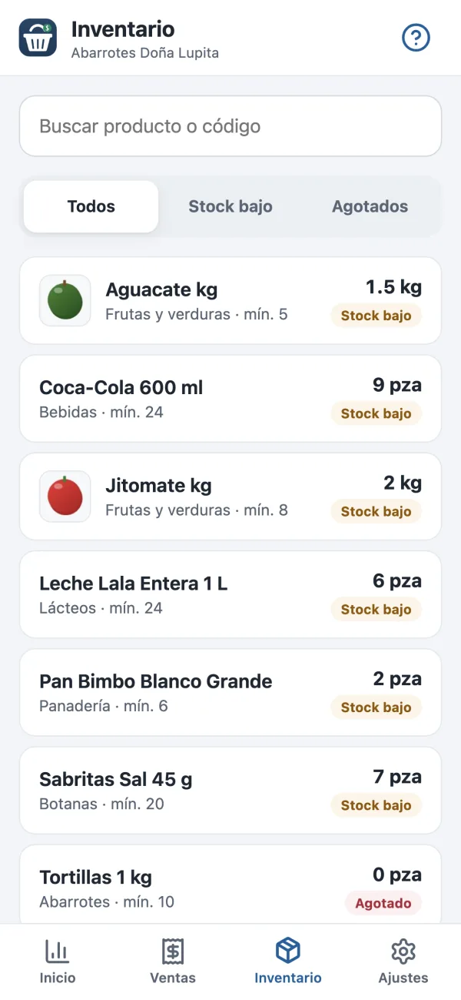
Versión más reciente · publicada el —. Los enlaces siempre apuntan a la última versión publicada.
Si entras desde la computadora de la tienda, el botón elegirá el instalador correcto por ti.
Instalador normal: siguiente, siguiente, listo. Crea un acceso en el escritorio y en el menú Inicio.
Abre el .dmg y arrastra el programa a Aplicaciones. Si no sabes cuál es tu Mac: menú → «Acerca de esta Mac».
brew tap minepacman/tap && brew install --cask punto-de-ventaPaquete .deb para Ubuntu 24.04+, Debian 13+ y Mint 22+; .rpm para Fedora y openSUSE; .tar.gz para cualquier otra distribución (incluye Ubuntu 22.04 y Debian 12).
El programa es gratuito y no está «firmado» con un certificado comercial (cuesta varios cientos de dólares al año). Por eso Windows y macOS muestran una advertencia la primera vez. El instalador que descargas desde esta página o desde GitHub es el original; puedes comprobarlo con las sumas SHA-256 de arriba.
Está hecho a propósito para equipos modestos: la PC que ya tienes en el mostrador casi seguro alcanza.
| Mínimo | Recomendado | |
|---|---|---|
| Sistema | Windows 10 (64 o 32 bits) · macOS 11 o más reciente · Linux de 64 bits | Windows 10/11 de 64 bits o macOS reciente |
| Memoria RAM | 2 GB | 4 GB |
| Procesador | Cualquier Intel/AMD de 64 bits (o de 32 bits con el instalador x86), Apple Silicon | Doble núcleo o mejor |
| Disco | Unos 300 MB para el programa más tus datos (una tienda ocupa pocos MB al año). Disco duro mecánico está bien. | Disco de estado sólido (SSD): abre en segundos |
| Pantalla | 1024 × 768 | 1366 × 768 o más |
| Internet | No se necesita para vender | Solo para actualizaciones, el clima y facturar |
Ocho pasos. El propio programa te lleva de la mano la primera vez con un asistente y un recorrido por las pestañas.
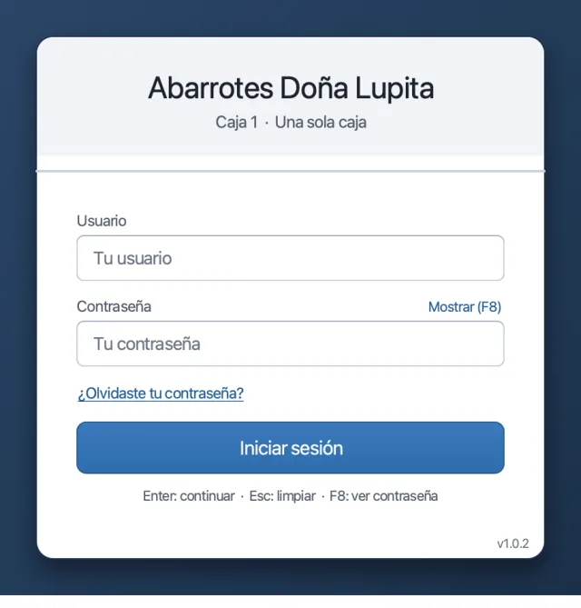
Descarga el instalador de tu sistema, ábrelo y acepta la advertencia de seguridad como se explica arriba. En Windows queda un acceso en el escritorio.
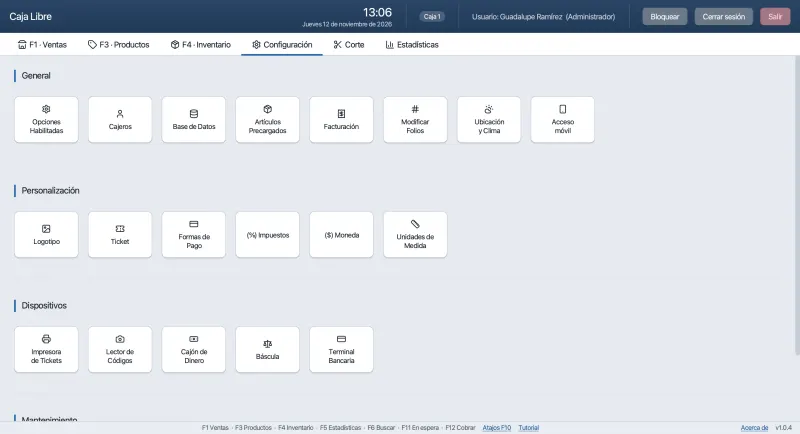
La primera vez pregunta cómo usarás esta computadora. Si tienes una sola caja (lo normal), elige Una sola caja y listo: no hay nada más que configurar.
Usuario admin, contraseña admin123. El programa te pide de inmediato una contraseña nueva, tuya. Guárdala bien: con ella autorizas cancelaciones y descuentos.
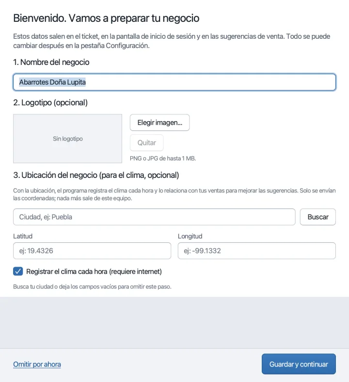
Un asistente te pide el nombre de la tienda y lo básico del ticket. Después, en Configuración, puedes poner logotipo, formas de pago, impresora, respaldos y más.
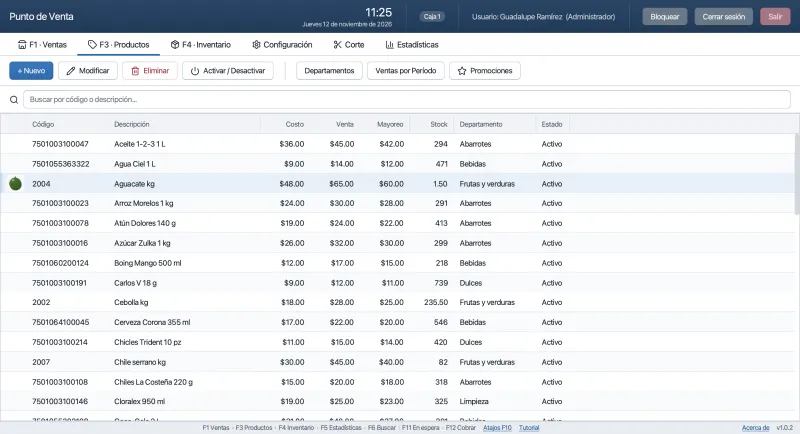
En F3 Productos pulsa «Nuevo», escanea el código con el lector, escribe nombre, costo y precio, y si quieres tómale foto. También hay un catálogo de artículos comunes para precargar.
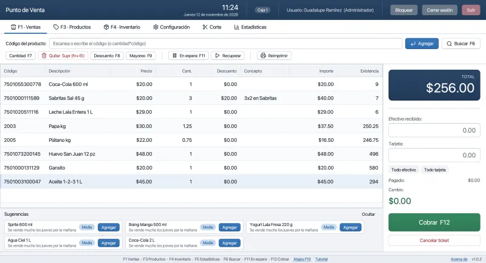
En F1 Ventas escanea los productos, F12 para cobrar, escribe lo que recibes y Enter. El cambio aparece en grande. ¿Otro cliente mientras tanto? F11 pone el ticket en espera.
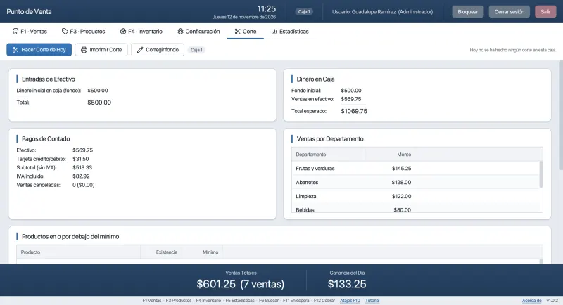
Al cerrar, en Corte cuentas el efectivo del cajón, el programa lo compara con lo que debería haber y registra el corte con tu nombre. Al día siguiente te pedirá el fondo de caja.
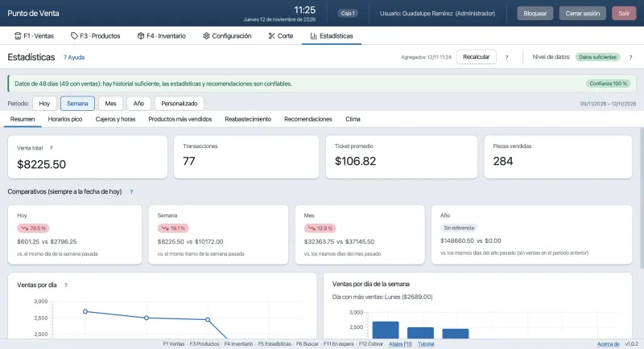
Desde el primer día ves el resumen; con las semanas se van encendiendo las proyecciones, el reabastecimiento por proveedor y las recomendaciones. Cada sección trae su botón «?».
cantidad*código)Caja Libre es software libre: lo puedes usar en todas las cajas que quieras, para siempre, sin pagar nada y sin que ninguna función se bloquee. Lo hace una sola persona en su tiempo, y las donaciones son lo que permite seguir corrigiendo, mejorando y dando soporte.
Quien dona recibe una clave de apoyo para su negocio. No desbloquea funciones (todas ya están abiertas); lo que da es tiempo del desarrollador:
La clave dura un año y se puede renovar con otra donación cuando quieras. Sin ella el programa sigue funcionando exactamente igual.
Caja Libre es gratuito. El autor no cobra por el programa ni por descargarlo. Si alguien te lo vendió, te lo instaló por una cuota o te ofreció «claves» o «soporte oficial», esa persona no es el autor y el autor no responde por ello.
SHA256SUMS.txt de la misma versión (shasum -a 256 archivo en Mac/Linux, Get-FileHash archivo en PowerShell).gh attestation verify archivo --repo Minepacman/Punto-Ventas prueba que salió de este repositorio.Llave pública del autor (claves de apoyo, revocaciones y datos de donación): kid 0d2a501a · Ed25519 MCowBQYDK2VwAyEAt8n1iOJpkwZQDteDtvp7WNUvSpUopLbVrZG7PtzEABM=. Política de marca y versiones modificadas: MARCA.md; política de firma de código: firma-de-codigo.md. «Caja Libre» y su logotipo identifican la versión del autor; una versión modificada debe usar otro nombre.
Elias Oziel Sánchez Fernández · PENDIENTE
Para dudas, comprobantes de donación y soporte.
PENDIENTESoporte personal para quienes apoyan el proyecto.
PENDIENTETodo el programa es público: puedes leerlo, copiarlo y mejorarlo.
github.com/Minepacman/Punto-VentasSi algo no funciona, cuéntalo aquí con todo detalle; sirve para todos.
Abrir un reporteSí, de verdad. No hay mensualidad, no hay límite de productos, de ventas ni de cajas, y ninguna función se bloquea. Es software libre con licencia GPLv3: puedes usarlo, copiarlo, regalarlo y hasta modificarlo. Si quieres apoyar, hay donaciones voluntarias, pero no son obligatorias para nada.
No. Vender, cobrar, inventario, corte y estadísticas funcionan sin conexión. Internet se usa solo si quieres tres cosas opcionales: buscar actualizaciones, el pronóstico del clima para las sugerencias y facturar (CFDI).
Se quedan en tu computadora, en un archivo de base de datos dentro de tu carpeta de usuario. Nadie los ve, no se suben a ninguna nube y el programa no manda estadísticas a nadie. Por eso mismo conviene activar los respaldos automáticos (Configuración) y guardar una copia en una USB de vez en cuando.
Está diseñado para eso: Windows 10 u 11 con 2 GB de RAM, disco duro normal y pantalla de 1024×768. Hay instalador de 32 bits para equipos muy antiguos (cuando está incluido en la versión). Windows 7 ya no es compatible. Lo que sí notarás es que en un equipo lento tarda unos segundos más en abrir; una vez abierto, vende igual de rápido.
Cuando hay versión nueva, el programa muestra un enlace discreto en la barra de abajo (nunca descarga ni instala nada solo). Bajas el instalador, lo ejecutas encima del anterior y listo: la base de datos y la configuración no se tocan. En Mac arrastras la app nueva sobre la anterior; en Linux instalas el paquete nuevo.
Sí. Una computadora de la tienda corre el servidor PostgreSQL (gratis) y las demás cajas se conectan a él por la red local; las existencias y los cortes se comparten. El programa trae la migración desde una sola caja y una guía paso a paso. Para una tienda con una sola caja no necesitas nada de esto.
Sí, factura por venta y factura global con CFDI 4.0 a través de Facturama, un proveedor autorizado por el SAT. Necesitas contratar una cuenta con ellos (ese servicio sí tiene costo, que le pagas a Facturama); el programa solo se conecta con tus credenciales. Si no facturas, simplemente no lo configuras.
Sí. Maneja venta por pieza y a granel (kilos con decimales, báscula opcional), productos sin código de barras con foto, departamentos y promociones. Lo único que no es: un sistema de restaurante con mesas y comandas.
Si tenías respaldos activos, instalas el programa en la computadora nueva y restauras el último respaldo desde Configuración: vuelven productos, ventas, cortes y usuarios. Por eso insistimos tanto en guardar copias fuera del equipo.
Lo hace una sola persona, Elias Oziel Sánchez Fernández, y todo el código es público en GitHub: cualquiera puede revisarlo. Las contraseñas se guardan cifradas, hay bitácora de todo lo que hacen los usuarios, y el programa no se comunica con ningún servidor salvo los tres casos opcionales de arriba.